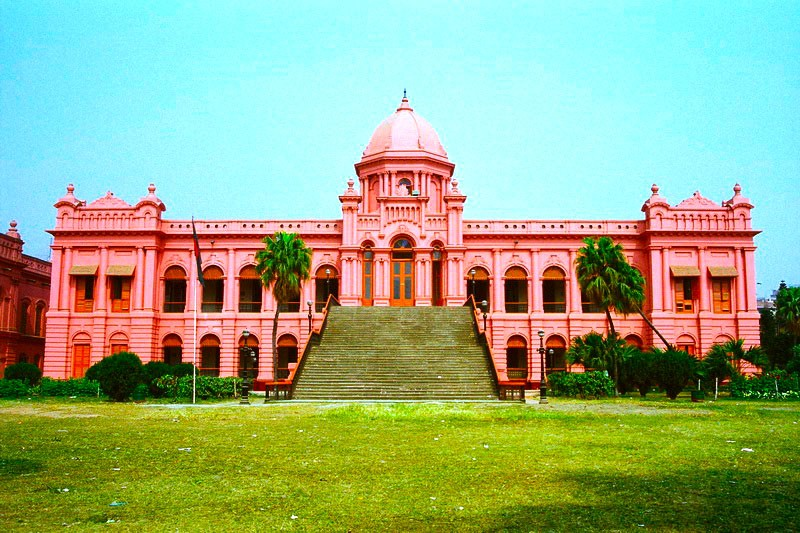

<p style="text-align: justify;">Ahsan Manzil was the official residential palace and seat of theDhaka Nawab Family. It is situated on the banks of the Buriganga River in Bangladesh. The palace is now a museum.This building is very old and also very beautiful.Because of its beauty many people visit this place.</p>

